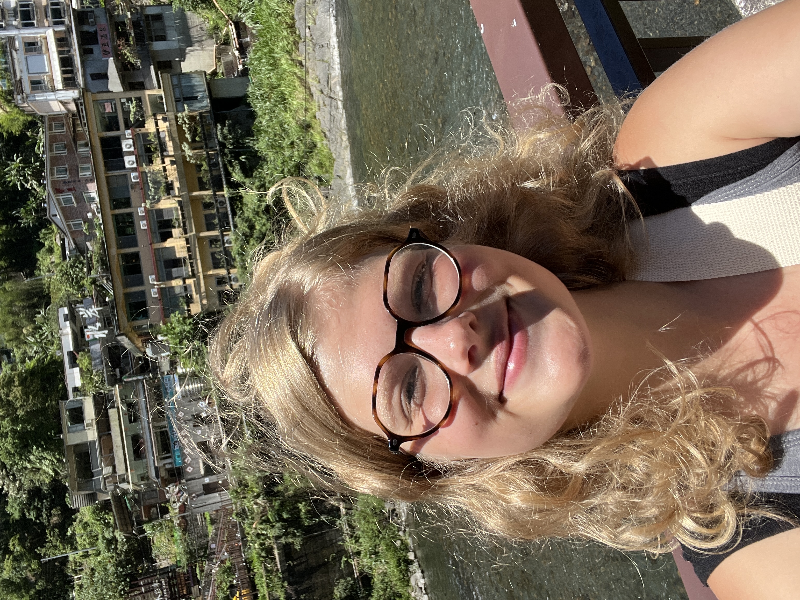
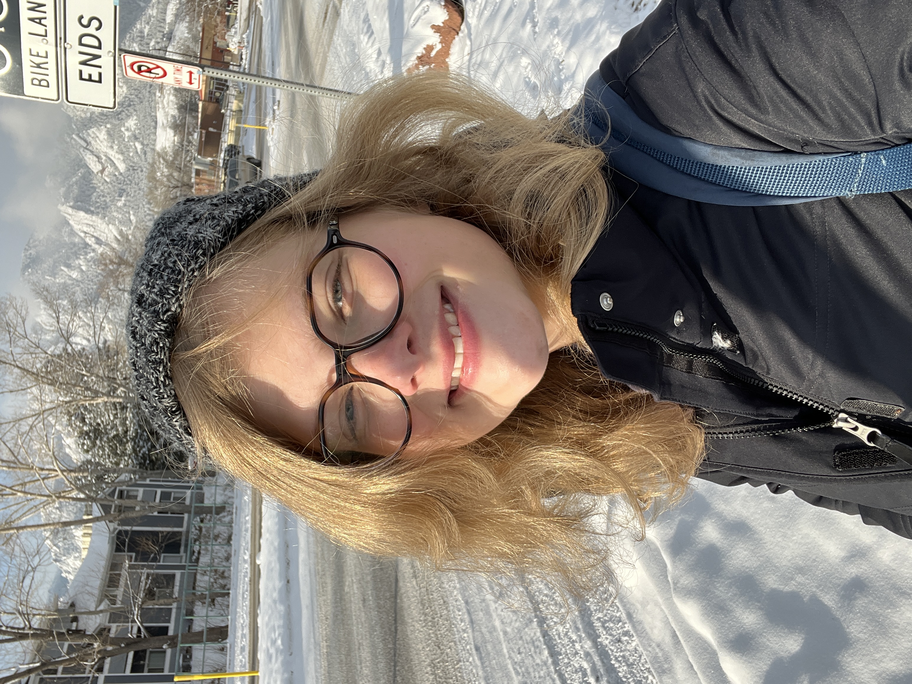

|  | |
 |
My name is Emmeline. Emme works too. My pronouns are she/her/hers
I've made this page for my Web Course in the Atlas Program at CU Boulder. I hope that by the end of this course, I'm able to make interactive and fun webpages! This is my last year ('23-'24) at CU Boulder, where I've been studying Chinese (汉语), International Affairs, and Creative Technology & Design.
December '22: IAFS Student Credits Alum for Cybersecurity Internship
2022 DC Cyber 9/12 Playbook (3rd Place Finalist overall)
2022 Atlantic Council Young Global Professional